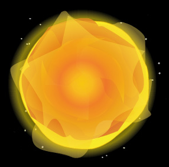

|  | The Centre of the Universe by Steve Shaddick (2009) This project came about after a musing on the word "revolution". First in the sense of circular movement, and second in the sense of social upheaval. The heliocentric model of our solar system touches upon both definitions and led me to a question: what would the movement of the solar system look like if Earth was still the centre of the model? With The Centre Of The Universe, you can not only choose Earth as the centre, but any planet or moon. I have tried to represent the solar as faithfully as possible, but I do realize there are many small descrepencies that simply aren't possible to adequately recreate (for example, Jupiter has some 62 moons - my model has only 4). The point is relative movement: distances, sizes and speeds are all relatively acurrate. Click and drag to move the universe around, click on a planet or moon to fix the centre, and use the mouse wheel to zoom in and out. Proceed to the The Centre of the Universe
P.S.- I do other stuff as well: www.steveshaddick.com
|